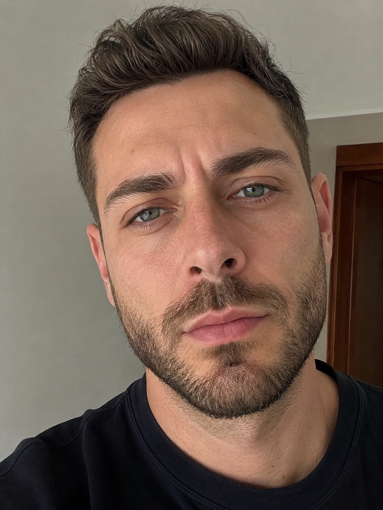
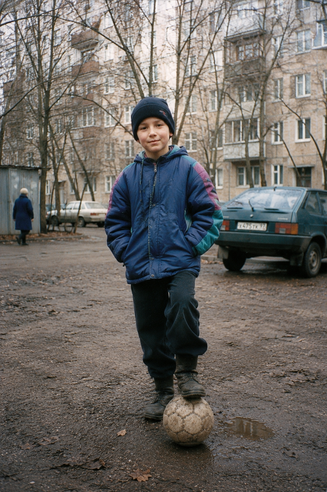
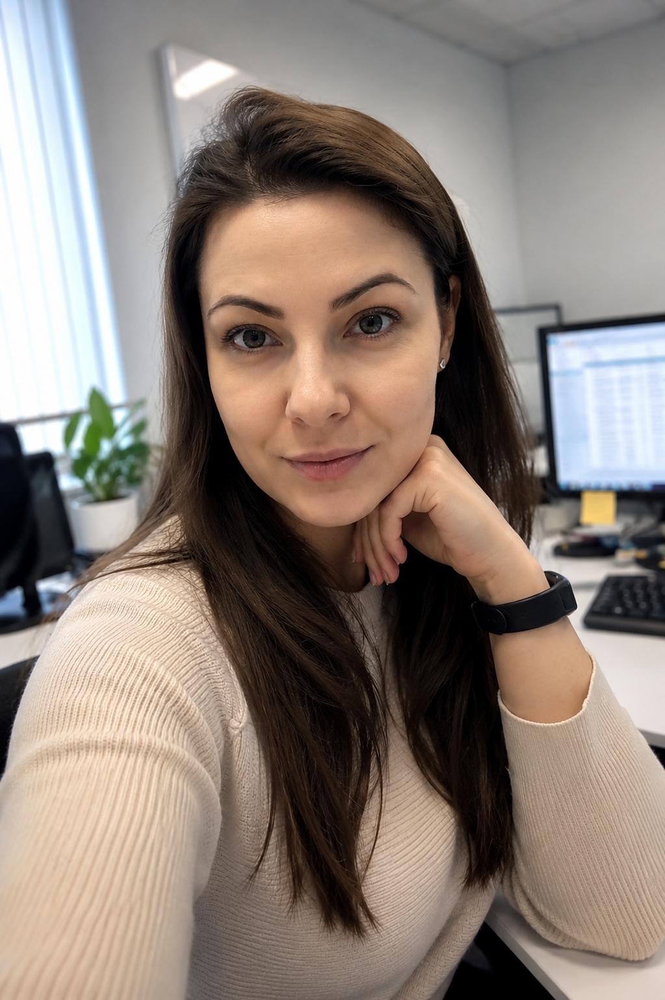
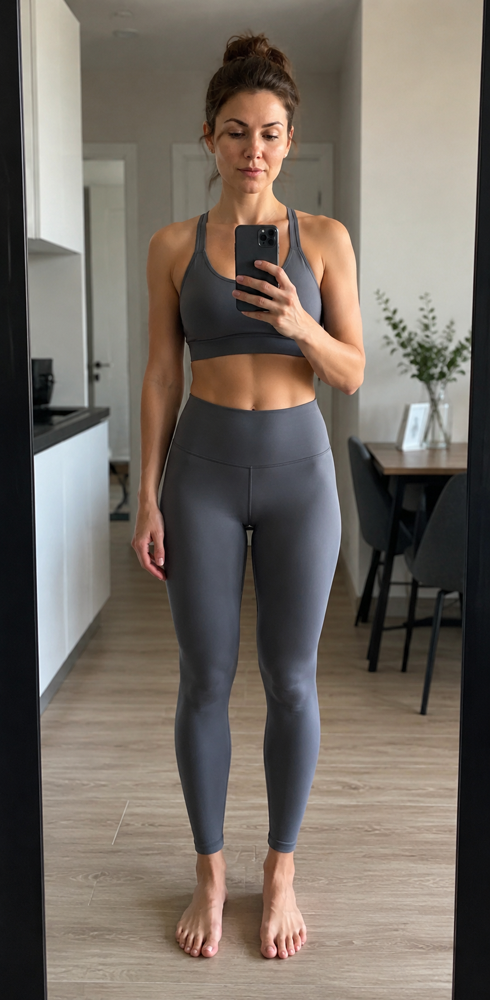
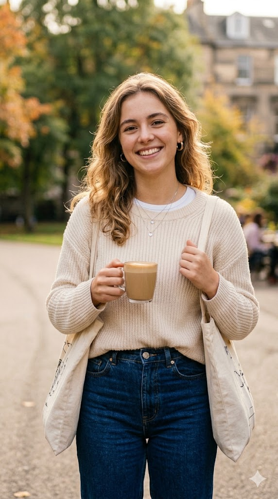
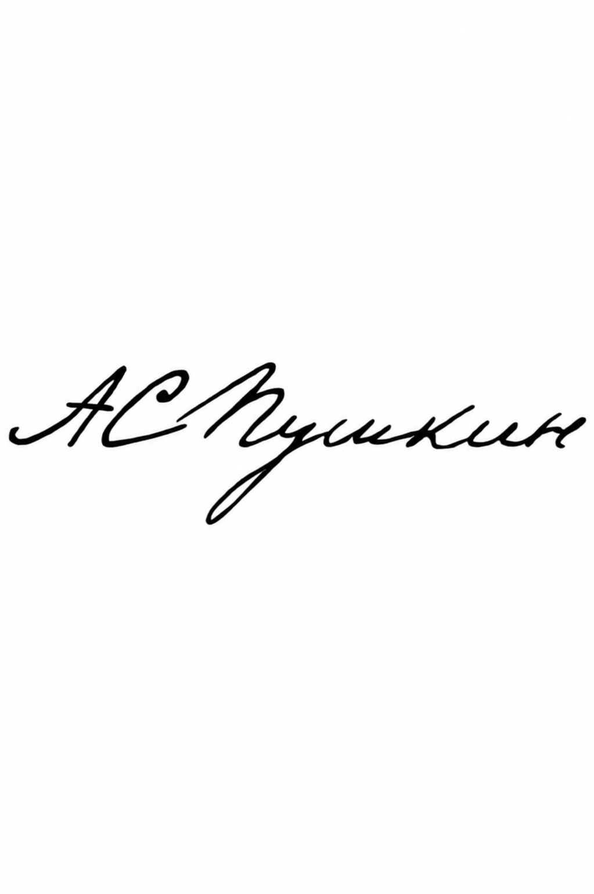

Подбери промпт для своей задачи в один клик!
ПРОМТЗИЛЛА
Библиотека промтов на все случаи жизни!
 Фото
Фото
Как похудеть на фото с помощью ИИ
Загрузи фото — нейросеть аккуратно скорректирует позу, посадку одежды и силуэт, чтобы человек визуально выглядел стройнее без грубой деформации.

ВнешностьХарактер по внешности с помощью нейросети
Загрузи фото человека — GPT Image 2 проанализирует взгляд, мимику, позу и стиль, и создаст инфографику с психологической интерпретацией.

ПодаркиФото с собой в детстве на день рождения через ИИ
Загрузи детское фото и актуальное — нейросеть объединит их в одну сцену. 5 готовых промтов для GPT Image 2 и Nano Banana PRO.

ВнешностьФорма лица с помощью нейросети
Загрузи фото анфас — GPT Image 2 определит форму лица и подберёт рекомендации по причёске, очкам и макияжу.
 Подарки
Подарки
Карточка футболиста с помощью нейросети
5 готовых промтов для генерации коллекционной карточки футболиста через ИИ — от стикера Панини до голографической премиум-карточки.
 Внешность
Внешность
Подбор очков с помощью нейросети
Два промта для GPT Image 2 — инфографика с рекомендациями по оправам и коллаж с примеркой 6 вариантов прямо на твоё фото.
 Подарки
Подарки
Фото на выпускной с помощью нейросети
5 готовых промтов для создания красивых выпускных фото через ИИ — от Алых Парусов до золотого заката. Загрузи своё фото и выбери фон.
ВнешностьТипаж по Кибби с помощью нейросети
Загрузи фото в полный рост — GPT Image 2 определит твой типаж из 13 по системе Кибби и создаст инфографику с рекомендациями по стилю, тканям и украшениям.
 Подарки
Подарки
Оживление детского рисунка с помощью нейросети
Два шага: сначала подготовь рисунок в Nano Banana PRO, затем оживи его в Kling. Готовые промты для каждого этапа — RU и EN.

ПромптыТипаж по Ларсон с помощью нейросети
Загрузи фото в полный рост — GPT Image 2 определит твой типаж из 20 по системе Двин Ларсон и создаст премиальную инфографику в стиле Vogue с рекомендациями по стилю.

ФотоФотография на паспорт через ИИ
Готовые промты для создания документальных фото по вашей фотографии. Внутренний паспорт РФ и загранпаспорт (ИКАО).
 Фото
Фото
Удалить фон с фотографии с помощью нейросети
Загрузи фото — Nano Banana PRO аккуратно удалит фон и оставит объект на прозрачном фоне, готовым для использования в дизайне.

ФотоАнализ подписи с помощью нейросети
Загрузи фото своей подписи — GPT Image 2 проанализирует её и создаст инфографику с характеристиками личности по методам графологии.